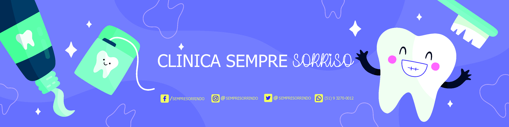

Somos uma clínica especialista em sorrisos, que busca o atendimento de qualidade para seus pacientes. A Clínica Sempre Sorrisos está no centro da cidade, fácil acesso, muito conforto e segurança e a melhor equipe de dentistas para acompanhamento do seu tratamento clínico. Faça sua avaliação gratuita. Nosso atendimento é personalizado com hora marcada para dar toda a atenção que você merece. Esse e outros fatores fazem ser a melhor clínica odontológica da região
